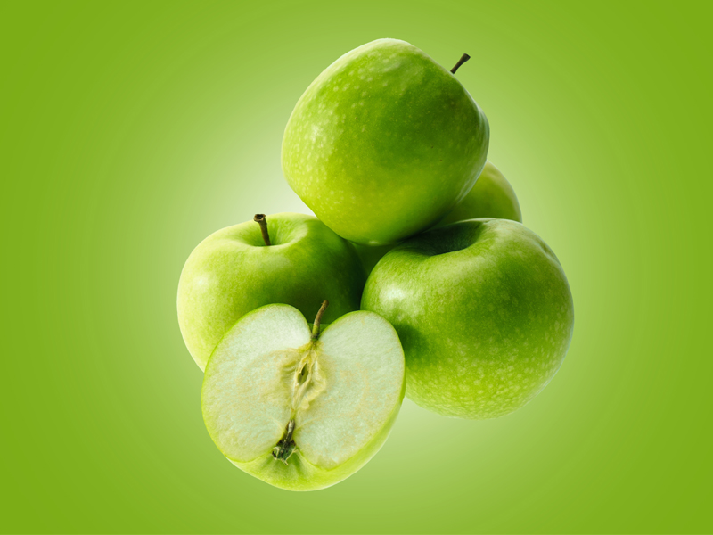
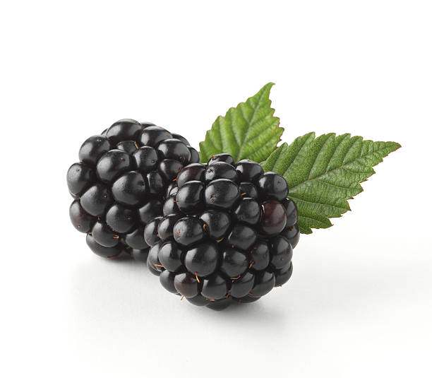
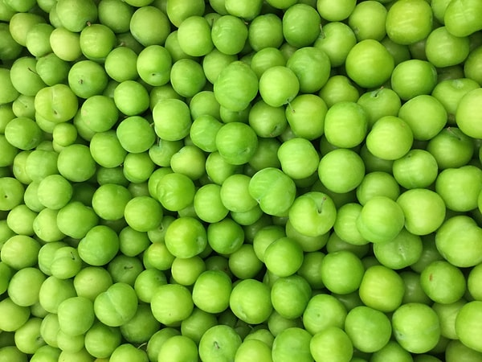

KİLO VERMEK BİR MATEMATİK DEĞİL, BİR YAŞAM TARZIDIR! SÜRDÜRÜLEBİLİR ÇÖZÜMLERLE İDEAL KİLONUZA KAVUŞUN.
📌 DENGELİ BESLEN, ENERJİK HİSSET!
💭 SİZDEN GELENLER

Sena Aydın
Bu siteyle tanıştıktan sonra yaşam tarzım tamamen değişti diyebilirim. Sağlıklı beslenme hakkında öğrendiklerim sayesinde hem enerjim arttı hem de kendimi daha iyi hissetmeye başladım. İçerikler sade, anlaşılır ve güvenilir kaynaklara dayanıyor. Organik ürünlerin ne kadar değerli olduğunu bu platform sayesinde fark ettim.

Ahmet Zengin
Web sitesi tasarımı gerçekten çok sade ve kullanıcı dostu. Aradığım bilgilere çok hızlı ulaşabiliyorum. Her sezon için özel öneriler olması çok güzel. Kendi tempoma uygun önerileri bulmak çok kolay oldu. Artık sabah rutinim sitenin önerdiği kısa egzersizler ve dengeli kahvaltılarla başlıyor.

Gizem Doğdu
Doğal yaşam ve sağlıklı alışkanlıklar edinmek isteyen herkesin ziyaret etmesi gereken bir platform. Tarifler pratik ve malzemeler ulaşılabilir. Ayrıca motive edici yazılar sayesinde bırakmayı planladığım kötü alışkanlıklardan uzak durmam daha kolaylaştı.

Mert Yıldırım
Başlarda tereddüt etmiştim ama siteyi kullandıkça ne kadar özenle hazırlandığını gördüm. Bilgiler bilimsel temelli, görseller kaliteli ve metinler akıcı. Sağlıklı yaşamın bir lüks değil, bir tercih olduğunu buradaki içerikler sayesinde daha net anladım.

Aslı Er
Yıllardır farklı sağlıklı yaşam sitelerini takip ediyorum ama burası kadar kapsamlı ve içten bir dil kullanan başka bir site görmedim. Sadece tarifler değil, aynı zamanda ruh sağlığına da önem verilmesi büyük artı. Ziyaret ettiğimde hem bilgi alıyorum hem de ilham buluyorum.

Hakan Gündüz
Sade tasarımı, samimi dili ve bilimsel bilgileriyle bu siteyi çok beğendim. Özellikle hareketsiz çalışanlar için önerilen esneme ve nefes egzersizleri çok işe yarıyor. Birkaç dakikalık içerikler bile günlük hayatımda fark yaratmaya başladı.
BLOG
Sağlıklı Yaşam, Dengeyle Kurulan Bir Hayatın Anahtarıdır
Sağlıklı yaşam, sadece hastalıklardan korunmak değil; fiziksel, zihinsel ve duygusal dengeyi de sürdürmektir. Yeterli uyku, dengeli beslenme ve düzenli egzersiz gibi temel alışkanlıkların yanı sıra, stres ve mental sağlık yönetimi de en az onlar kadar önemlidir. Sağlıklı bir beden, aktif bir yaşam tarzıyla desteklenmeli; sağlıklı bir zihin ise olumlu düşünce, sosyal bağlar ve duygusal dengeyle beslenmelidir.
Sağlıklı Yaşam
Sağlıklı bir yaşam sürmek, sadece hastalıklardan kaçınmak değil; fiziksel, zihinsel ve duygusal iyilik hâlini dengede tutmayı da gerektirir. Besleyici öğünler tüketmek, düzenli egzersiz yapmak ve yeterli uyku almak gibi basit alışkanlıklar, vücudu güçlü tutmada hayati rol oynar. Ayrıca stresi yönetmek ve olumlu ilişkiler kurmak da zihin sağlığına katkıda bulunur. Günlük yürüyüşler yapmak veya bilinçli farkındalık (mindfulness) pratikleri gibi küçük değişiklikler bile genel sağlık üzerinde önemli bir etki yaratabilir. Sağlıklı bir yaşam tarzını benimsemek, daha fazla enerji, mutluluk ve daha uzun, anlamlı bir hayata götüren sürekli bir yolculuktur.
Sağlıklı Yaşam
Günde sadece 30 dakika yürüyüş yapmak bile kalp sağlığınızı korumada önemli bir adımdır. Stres yönetimi için nefes egzersizleri veya meditasyon gibi teknikleri deneyebilir, sevdiklerinizle kaliteli zaman geçirerek duygusal dengenizi güçlendirebilirsiniz. Unutmayın, yeterli ve kaliteli uyku olmadan tüm bu çabalar eksik kalır - her gece 7-8 saat kesintisiz uyumaya özen gösterin. Sağlıklı yaşam bir günlük hedef değil, hayat boyu sürecek bir yolculuktur ve bu yolculukta attığınız her küçük olumlu adım, size daha enerjik, daha mutlu ve daha uzun bir ömür olarak geri dönecektir.
Sağlık
Meyveler, genel sağlığı destekleyen temel vitaminlerin, minerallerin ve antioksidanların doğadaki güç kaynağıdır. Lif açısından zengin olan meyveler, sindirime yardımcı olur ve sağlıklı bir bağırsak düzenini korur. Çilek ve turunçgiller gibi meyveler, bağışıklığı güçlendiren C vitaminiyle doluyken; muz, kalp sağlığı için önemli olan potasyum sağlar. Doğal şekerleri, işlenmiş atıştırmalıklara kıyasla daha sağlıklı bir enerji alternatifi sunar ve yüksek su içerikleriyle vücudunuzun nemlenmesine katkıda bulunur. Düzenli meyve tüketimi, kalp hastalığı ve diyabet dahil olmak üzere kronik hastalık risklerinin azalmasıyla ilişkilendirilir. Beslenmenize renkli meyveleri çeşitlendirerek eklemek, optimal sağlık için geniş bir yelpazede besin almanızı sağlar.